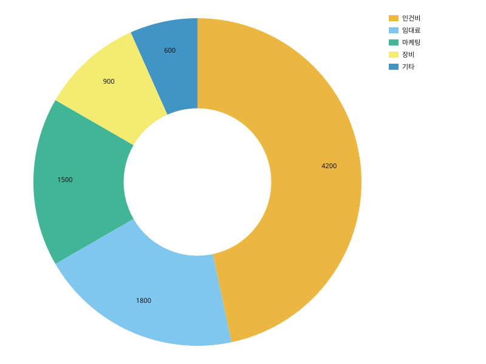

pieplot
값 하나짜리 컬럼을 원의 조각으로 나눈다. 조각의 각도가 전체 합에 대한 비율이다.
- 데이터
- values: 수치(음수 불가, 전부 0 이면 거부) · labels(선택): 조각 이름
데이터
import svgplot as sp
BUDGET = {
"항목": ["인건비", "임대료", "마케팅", "장비", "기타"],
"금액": [4200.0, 1800.0, 1500.0, 900.0, 600.0],
}
예시
기본 — labels= 를 주지 않으면 조각 번호가 이름이 된다

sp.pieplot(BUDGET, values="금액")
labels= 로 조각에 이름을 붙인다
sp.pieplot(BUDGET, values="금액", labels="항목")
inner_radius= 는 가운데를 비운다(도넛)

sp.pieplot(BUDGET, values="금액", labels="항목", inner_radius=0.45)
info= 는 그림 옆에 각주 표를 붙인다 — .md 로 저장할 때 함께 실린다
sp.pieplot(BUDGET, values="금액", labels="항목", info=[("항목", "@항목"), ("금액", "@금액{0,0}")])
메모
- 음수와 비유한 값을 라벨명을 대고 거부하고, 합이 0 이면 거부한다. 각도로 나눌 전체가 없기 때문이다.
- inner_radius 는 [0, 1) 안의 값이다 — 바깥 반지름에 대한 비율이고, 1 이면 조각이 사라진다.
- 항상 범례를 그린다. 조각 안에 이름을 넣지 않는 이유는 좁은 조각에 글자가 들어가지 않기 때문이다.
- info= 를 받는 세 차트 중 하나다(나머지는 lineplot·scatterplot). 한 행이 한 조각이라 표의 행과 그림의 마크가 일대일로 맞기 때문이다.